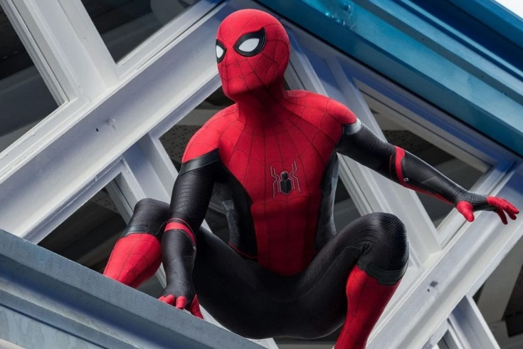

Съёмки «Человека-паука 4» запланированы на конец 2024 года
Дата публикации: 29 ноября 2023 г.
Волнующая новость для всех поклонников кинематографической вселенной Marvel: съемки четвертой части «Человека-паука» намечены на завершение 2024 года. Этот анонс вызвал бурю эмоций в кинематографическом сообществе, предвкушая новые приключения любимого супергероя. Создатели фильма обещают еще более захватывающий и динамичный сюжет, полный невероятных сцен и неожиданных поворотов событий. Съемочная группа готовится к созданию великолепных визуальных эффектов, которые подчеркнут уникальные способности Человека-паука. Фанаты ожидают, что новая часть франшизы принесет не только захватывающий сюжет, но и важные развития для персонажа, открыв новые грани его характера и предоставляя зрителям увлекательный взгляд на его мир. Съемки «Человека-паука 4» стали объектом широкого обсуждения в социальных сетях, где фанаты делятся своими ожиданиями и предположениями относительно сюжета и возможных появлений других персонажей из мира Marvel. Неизвестно, какие вызовы и приключения ждут Питера Паркера в новом фильме, но одно точно – аудитория уже нетерпеливо ожидает выхода «Человека-паука 4» на большие экраны.